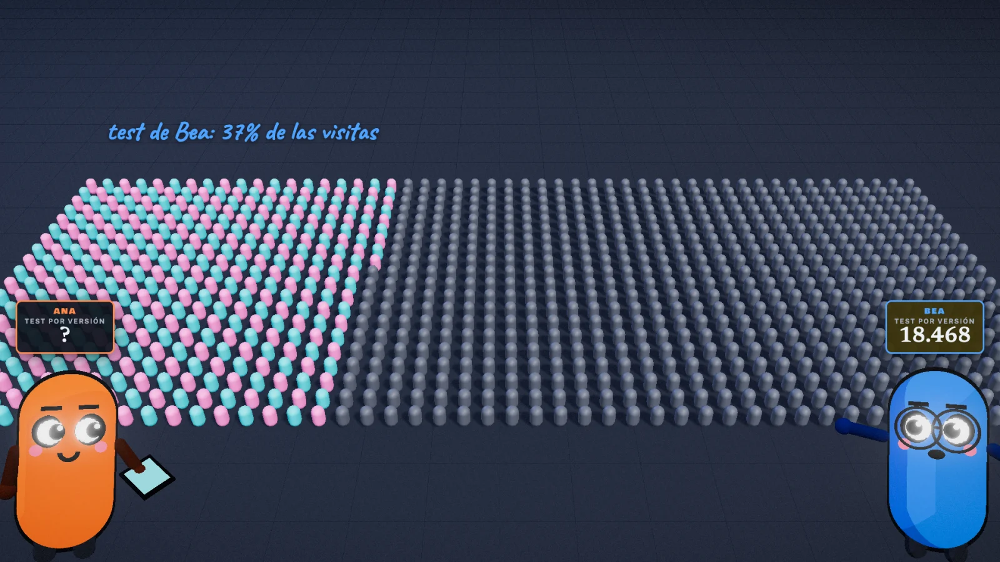
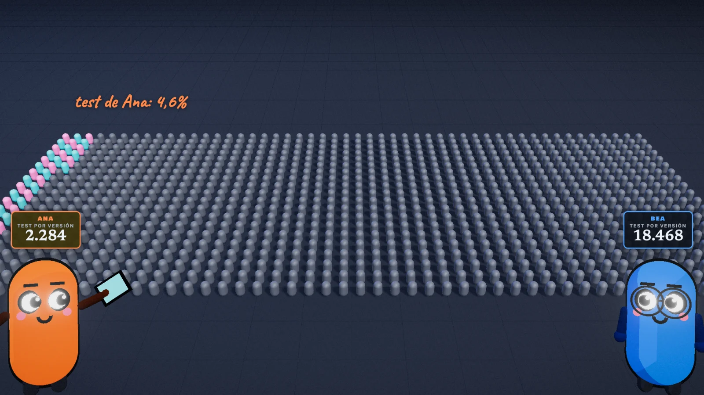
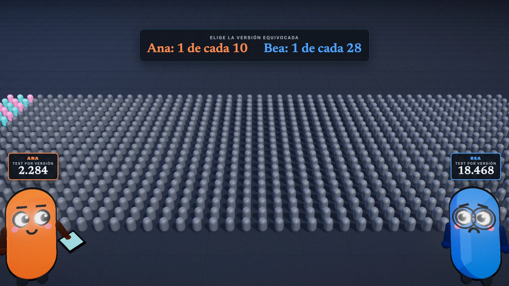
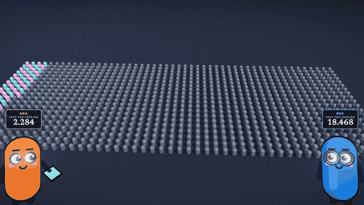
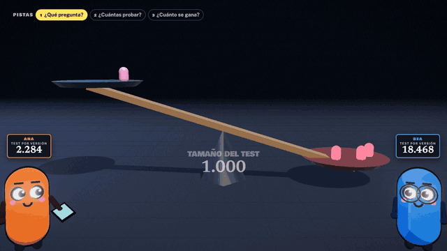
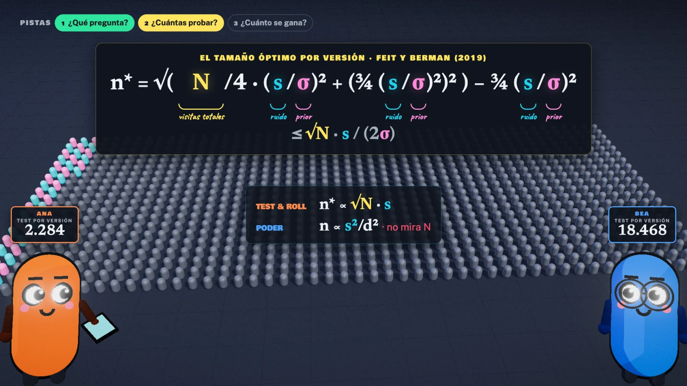
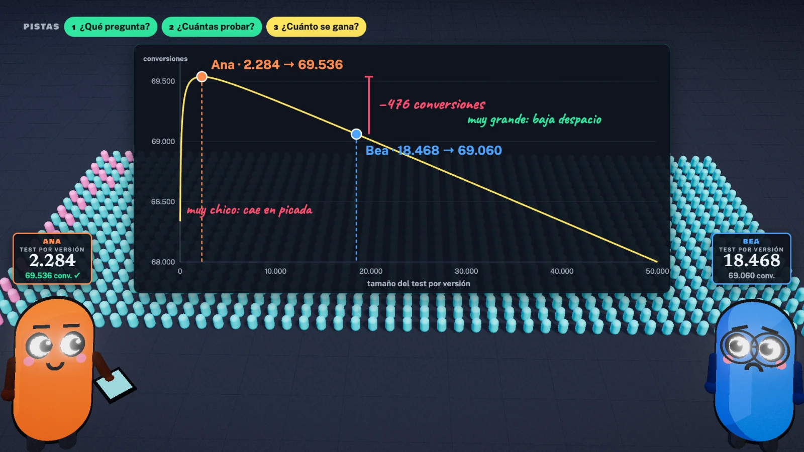
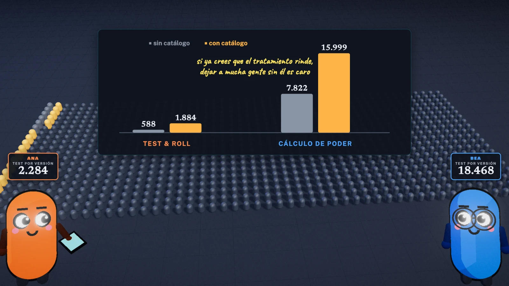
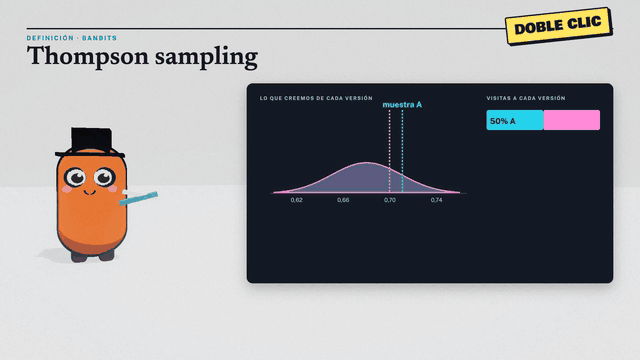
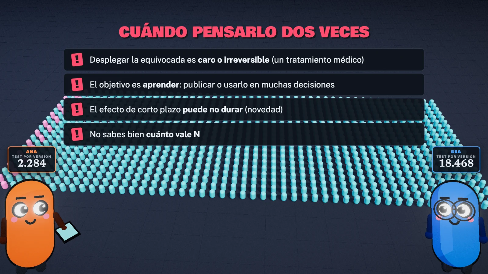

source("codigo/tr/test_roll.R") # n_opt(), ganancia(), tasa_error(), n_hipotesis(), ganancia_asim(), thompson()
N <- 1e5; mu <- 0.68; sigma <- 0.03; s <- 0.4663 Test & Roll
A/B tests para decidir: cuántas visitas probar cuando lo que importa es ganar, no publicar
En este capítulo.
- Muchos A/B tests no buscan publicar un hallazgo, sino decidir qué versión mostrar al resto de los clientes. Feit y Berman (2019) llaman a esto test & roll: se prueba con una parte de la población y se despliega la ganadora al resto.
- Con ese objetivo, el error tipo I casi no cuesta: si las dos versiones son iguales, da lo mismo cuál se despliegue. La regla óptima es elegir la que rindió más, sea o no significativa la diferencia.
- El tamaño óptimo del test tiene una fórmula cerrada. Crece con √N (la población) y con el ruido s, y no con s² como el cálculo de poder. Casi siempre es mucho más chico.
- La fórmula necesita un prior: cuánto suelen diferir dos versiones. Se estima con experimentos anteriores.
- Un bandit (Thompson sampling) gana un poco más, pero es más difícil de operar.
Preparación
Todo el capítulo usa el ejemplo del sitio web de Feit y Berman (2019, sec. 5.1). Un sitio va a recibir N = 100.000 visitas durante el período de despliegue y hay dos versiones de una página, A y B. De cada 100 visitas, unas 68 hacen clic.
| Parámetro | Valor | Qué es |
|---|---|---|
| \(N\) | 100.000 | visitas totales (test + despliegue) |
| \(\mu\) | 0,68 | tasa de clic esperada de cada versión, antes de probar |
| \(\sigma\) | 0,03 | cuánto puede variar esa tasa entre versiones: el prior |
| \(s\) | 0,466 | ruido de la respuesta de cada visita: \(\sqrt{0{,}68 \cdot 0{,}32}\) |
Las funciones están programadas a mano, en pocas líneas, a partir de las ecuaciones del paper. No hay un paquete estable de test & roll: el repositorio de Feit tiene solo scripts de replicación, y bayesAB salió de CRAN en 2025.
import sys, numpy as np, pandas as pd
sys.path.insert(0, "codigo/tr")
from test_roll import * # las mismas funciones que en R
pd.set_option("display.width", 140); pd.set_option("display.max_columns", 10)
N, mu, sigma, s = 100_000, 0.68, 0.03, 0.4663.1 Lo bayesiano en dos minutos
Este capítulo abre la parte bayesiana del apunte, así que partimos por lo mínimo. Un análisis bayesiano tiene tres piezas:
- Prior: lo que creemos sobre un parámetro antes de ver los datos. Aquí, la tasa de clic de una versión: «anda por 0,68, y rara vez se aleja más de 0,06».
- Verosimilitud: qué tan probables son los datos para cada valor del parámetro.
- Posterior: lo que creemos después de ver los datos. Combina las dos anteriores.
Con un prior normal y datos normales, la posterior también es normal, y su media es un promedio ponderado entre lo que creíamos y lo que vimos:
Media posterior de una versión, después de n visitas con tasa observada ȳ \(\mathbb{E}[m \mid \bar y]\)lo que creemos después = \(w\)peso de los datos · \(\bar y\)lo que vimos + \((1-w)\)peso del prior · \(\mu\)lo que creíamos con \(w = \dfrac{n/s^2}{1/\sigma^2 + n/s^2}\): con pocas visitas manda el prior; con muchas, los datos.
Y la decisión se toma minimizando la pérdida esperada bajo la posterior. Esa es la diferencia con una prueba de hipótesis: no se pregunta «¿puedo rechazar que son iguales?», sino «¿qué hago, dado lo que sé?».
Interactivo · Del prior a la posterior
Con la tasa observada fija en 0,71, mueve las visitas desde 1 hasta 10.000. ¿Con cuántas visitas el peso de los datos llega a 50%? Compáralo con \(s^2/\sigma^2 = 0{,}466^2 / 0{,}03^2 \approx 241\). ¿Por qué coincide?
3.2 Dos tests para dos preguntas
Dos analistas reciben el encargo de elegir entre A y B.
Bea usa el cálculo de poder del capítulo de poder estadístico. Quiere detectar una mejora de 2% en la tasa de clic (\(d = 0{,}68 \times 0{,}02 = 0{,}0136\)), con 5% de significancia y 80% de poder:
\[n_{HT} = (z_{0,975} + z_{0,80})^2 \, \frac{2 s^2}{d^2} \approx 18.468 \text{ visitas por versión.}\]
Ana usa test & roll y pide 2.284 por versión, ocho veces menos.


Las dos responden preguntas distintas:
| Test de hipótesis (Bea) | Test & roll (Ana) | |
|---|---|---|
| Pregunta | ¿El efecto es distinto de cero? | ¿Qué versión despliego para ganar más? |
| Objetivo | Poder \(1-\beta\) con error tipo I \(\alpha\) | Ganancia total esperada (test + despliegue) |
| Insumos | \(\alpha\), \(\beta\), efecto mínimo \(d\), \(s\) | \(N\), \(s\), prior (\(\mu\), \(\sigma\)) |
| Tamaño | \(\propto s^2/d^2\), no depende de \(N\) | \(\propto \sqrt{N}\, s/\sigma\), siempre \(< N\) |
| Decisión | Rechazar o no H0 (¿y si no rechaza?) | Siempre elige: la de mayor media posterior |
| Cuándo conviene | Conocimiento que se publica y generaliza; costos asimétricos; regulación | Decisiones tácticas repetidas sobre una población finita: mails, web, avisos, cupones |

3.3 El problema test & roll
▶ ver en el video · 0:38 ▶ ver en el video: aprender cuesta · 2:21
Un test & roll tiene dos etapas (Feit y Berman 2019, sec. 2):
- Test: \(n_1\) visitas ven A y \(n_2\) ven B, al azar.
- Roll: las \(N - n_1 - n_2\) visitas restantes ven la versión elegida con los datos del test.

El tamaño del test se elige para maximizar la ganancia total esperada, sumando las dos etapas. Con priors simétricos, \(n_1 = n_2 = n\) y la ganancia esperada es (Feit y Berman 2019, ecs. 7 y 9):
Conversiones totales esperadas con n visitas por versión \(\mathbb{E}[\Pi]\)test + despliegue = \(2n\mu\)el test: en promedio, μ + \((N-2n)\)visitas que quedan · \(\Big(\mu + \dfrac{\sqrt2\,\sigma^2}{\sqrt\pi\,\sqrt{2\sigma^2 + 2s^2/n}}\Big)\)μ + lo que se gana por elegir bien
El último término es la clave. Con \(n\) chico, el test casi no informa y elegir es como tirar una moneda: se gana \(\mu\). Con \(n\) grande, se elige casi siempre la mejor y la ganancia por visita se acerca a \(\mu + \sigma/\sqrt\pi\). Pero cada visita del test es una visita menos en el despliegue, y la mitad de ellas vio la versión peor.
Aprender cuesta, equivocarse también. Cada visita que agregas al test sube el costo de aprender (más gente ve la versión peor). Cada visita que quitas sube el riesgo de desplegar la peor a todo el resto. El tamaño óptimo equilibra los dos costos.

3.4 La regla: elige el ganador
Despliega la versión con mayor media posterior (Feit y Berman 2019, ec. 8). Con priors simétricos y grupos del mismo tamaño, eso equivale a desplegar la versión con mayor tasa observada en el test, sea o no significativa la diferencia.
¿Por qué ignorar la significancia? Porque en esta decisión el error tipo I casi no cuesta. Si A y B son iguales, da lo mismo cuál se despliegue: la ganancia es la misma. Y si son distintas, la regla elige la mejor con alta probabilidad cuando la diferencia es grande, y se equivoca sobre todo cuando la diferencia es chica, es decir, cuando equivocarse cuesta poco.
«No significativo» no significa «no sé qué hacer». Quedarse con la versión actual, alargar el test hasta que salga significativo o elegir al azar son prácticas comunes (Feit y Berman 2019, sec. 1), pero todas desperdician información. Además, alargar el test hasta que salga significativo infla los falsos positivos (el p-hacking por detención opcional; ver el capítulo de pruebas múltiples).
3.5 ¿Cuántos probar?
Maximizando la ganancia esperada se obtiene una fórmula cerrada (Feit y Berman 2019, ec. 10 y proposición A.2):
Tamaño óptimo por versión · Feit y Berman (2019) \(n^*\)visitas por versión = \(\sqrt{\dfrac{N}{4}\Big(\dfrac{s}{\sigma}\Big)^2 + \Big(\dfrac34\Big(\dfrac{s}{\sigma}\Big)^2\Big)^2}\)crece con √N − \(\dfrac34\Big(\dfrac{s}{\sigma}\Big)^2\)ruido sobre prior ≤ \(\sqrt N\,\dfrac{s}{2\sigma}\)cota simple
Tres perillas:
- \(N\), la población. Más visitas por delante → vale más aprender. Pero el tamaño crece con \(\sqrt N\), no con \(N\): la fracción de la población que se usa en el test baja cuando \(N\) sube.
- \(s\), el ruido de la respuesta. Más ruido → cada visita enseña menos. El tamaño crece con \(s\), no con \(s^2\) como en el cálculo de poder. Con respuestas muy ruidosas (ventas en pesos, por ejemplo), la diferencia entre los dos enfoques es enorme.
- \(\sigma\), el prior. Cuán distintas esperamos que sean las versiones. Con \(\sigma\) grande, las diferencias son grandes y fáciles de ver, y alcanza con un test chico.

d <- mu * 0.02
data.frame(N = c(1e4, 1e5, 1e6, 1e7)) |>
transform(n_opt = round(n_opt(N, s, sigma)),
n_poder = round(n_hipotesis(s, d)),
pct_test_opt = round(100 * 2 * n_opt(N, s, sigma) / N, 1)) N n_opt n_poder pct_test_opt
1 1e+04 617 18430 12.3
2 1e+05 2282 18430 4.6
3 1e+06 7588 18430 1.5
4 1e+07 24380 18430 0.5d = mu * 0.02
pd.DataFrame({"N": [1e4, 1e5, 1e6, 1e7]}).assign(
n_opt=lambda x: n_opt(x.N, s, sigma).round(),
n_poder=round(n_hipotesis(s, d)),
pct_test_opt=lambda x: (100 * 2 * n_opt(x.N, s, sigma) / x.N).round(1)) N n_opt n_poder pct_test_opt
0 10000.0 617.0 18430 12.3
1 100000.0 2282.0 18430 4.6
2 1000000.0 7588.0 18430 1.5
3 10000000.0 24380.0 18430 0.5Con 10.000 visitas, el óptimo es 617 por versión; el cálculo de poder pide 18.468 por versión (18.430 con nuestro redondeo de \(d\)), casi cuatro veces la población. El cálculo de poder también da 18.468 con 10 millones de visitas, donde el óptimo es unas 24.000. Por eso el paper dice que el tamaño de una prueba de hipótesis «no mira \(N\)».
Interactivo · Las tres perillas de n*
- Duplica el ruido \(s\). ¿Cuánto crece \(n^*\)? ¿Y el tamaño del cálculo de poder?
- Multiplica \(N\) por 100. ¿Cuánto crece \(n^*\)? ¿Qué pasa con la fracción de visitas que se usa en el test?
TipSolución
- \(n^*\) casi se duplica (crece como \(s\)); el del cálculo de poder se cuadruplica (crece como \(s^2\)).
- \(n^*\) crece unas 10 veces (\(\sqrt{100}\)), así que la fracción en el test cae unas 10 veces.
3.6 ¿Cuánto se gana?
La curva de conversiones totales frente al tamaño del test (Feit y Berman 2019, fig. 3) tiene una forma característica: sube en picada hasta el óptimo y después baja despacio.

PI <- info_perfecta(N, mu, sigma)
plan <- function(nombre, n) {
g <- if (n == 0) N * mu else ganancia(N, n, mu, sigma, s)
data.frame(plan = nombre, n_por_version = round(n), conversiones = round(g),
regret_pct = round(100 * (PI - g) / PI, 2), error_pct = round(100 * ifelse(n == 0, 0.5, tasa_error(n, sigma, s)), 1))
}
rbind(plan("Sin test (al azar)", 0), plan("Test de hipótesis", n_hipotesis(s, d)),
plan("Test de hipótesis con FPC", n_hipotesis_fpc(s, d, N)), plan("Test & roll", n_opt(N, s, sigma))) plan n_por_version conversiones regret_pct error_pct
1 Sin test (al azar) 0 68000 2.43 50.0
2 Test de hipótesis 18430 69062 0.91 3.6
3 Test de hipótesis con FPC 13466 69226 0.67 4.2
4 Test & roll 2282 69536 0.22 10.0PI = info_perfecta(N, mu, sigma)
def plan(nombre, n):
g = N * mu if n == 0 else ganancia(N, n, mu, sigma, s)
return dict(plan=nombre, n_por_version=round(n), conversiones=round(g),
regret_pct=round(100 * (PI - g) / PI, 2), error_pct=round(100 * (0.5 if n == 0 else tasa_error(n, sigma, s)), 1))
pd.DataFrame([plan("Sin test (al azar)", 0), plan("Test de hipótesis", n_hipotesis(s, d)),
plan("Test de hipótesis con FPC", n_hipotesis_fpc(s, d, N)), plan("Test & roll", n_opt(N, s, sigma))]) plan n_por_version conversiones regret_pct error_pct
0 Sin test (al azar) 0 68000 2.43 50.0
1 Test de hipótesis 18430 69062 0.91 3.6
2 Test de hipótesis con FPC 13466 69226 0.67 4.2
3 Test & roll 2282 69536 0.22 10.0Las cifras reproducen la tabla 1 del paper. Las pequeñas diferencias (18.430 frente a 18.468, por ejemplo) vienen de cómo se redondean \(d\) y los cuantiles normales.
| Plan | n por versión | Conversiones | Regret | Error de despliegue |
|---|---|---|---|---|
| Sin test (al azar) | — | 68.000 | 2,43% | 50% |
| Test de hipótesis | 18.468 | 69.060 | 0,91% | 3,6% |
| Test de hipótesis con FPC | 13.487 | 69.225 | 0,67% | 4,2% |
| Test & roll | 2.284 | 69.536 | 0,22% | 10,0% |
| Thompson sampling | — | 69.672 | 0,03% | — |
| Información perfecta | — | 69.693 | 0% | — |
El regret es la diferencia entre lo que se habría ganado con información perfecta (desplegar la mejor versión a todos, sin probar) y lo que gana el plan. Con priors normales, la información perfecta vale \(N(\mu + \sigma/\sqrt\pi)\) (Feit y Berman 2019, ec. 13). Test & roll captura el 91% de lo que se puede ganar sobre elegir al azar.
Dos resultados del paper explican la tabla:
- El error de despliegue óptimo no es 5%. Con \(n^*\), el sitio despliega la versión peor el 10% de las veces, pero casi solo cuando A y B son casi iguales (Feit y Berman 2019, ecs. 11 y 12).
- Regret que crece como \(\sqrt N\). El de test & roll está acotado por \(3 s\sqrt N/\sqrt\pi\), es decir, crece como \(O(\sqrt N)\). El de un tamaño fijado por poder crece como \(\Omega(N)\): con poblaciones grandes, la diferencia se agranda (Feit y Berman 2019, ecs. 14 y 16).
Ojo al leer la ecuación (12) del paper. Entrega la probabilidad conjunta de que la versión B sea mejor y se despliegue la A. La tasa de error de la tabla 1 (10%) es la probabilidad condicional de equivocarse dado que una es mejor, que es el doble. La función tasa_error() de este capítulo ya incluye ese factor 2.
Interactivo · La curva de ganancia
Con la función ganancia(), calcula cuántas conversiones se pierden frente al óptimo si el test tiene 2.000 visitas menos por versión (284) y si tiene 2.000 más (4.284). ¿Hacia qué lado conviene equivocarse?
TipSolución
g <- ganancia(N, 2284, mu, sigma, s)
g - ganancia(N, 284, mu, sigma, s) # ≈ 299 conversiones menos
g - ganancia(N, 4284, mu, sigma, s) # ≈ 30 conversiones menosQuedarse corto por 2.000 visitas cuesta unas diez veces más que pasarse por lo mismo: la curva cae en picada a la izquierda del óptimo y baja despacio a la derecha. Ante la duda, conviene pasarse un poco (Feit y Berman 2019, sec. 5.1). (Ojo: la comparación es por la misma cantidad de visitas. Con la mitad y el doble del óptimo, las pérdidas son parecidas: 33 y 37.)
3.7 ¿De dónde sale el prior?
▶ ver en el video: doble clic: el prior · 3:14
La fórmula necesita \(\mu\) y \(\sigma\) antes de probar. Feit y Berman los estimaron con 2.101 tests anteriores en sitios web (Feit y Berman 2019, sec. 5.1 y apéndice E). Ajustaron un modelo jerárquico a las tasas de clic de todos los brazos y obtuvieron que se reparten como una normal \(\mathcal N(0{,}68;\ 0{,}03^2)\). Eso es un análisis bayesiano empírico: el prior sale de los datos de muchos experimentos parecidos.
¿Cuánto implica que difieran dos versiones? Si \(m_1\) y \(m_2\) son independientes \(\mathcal N(\mu, \sigma^2)\), la diferencia \(m_1 - m_2\) es \(\mathcal N(0, 2\sigma^2)\), y su valor absoluto tiene media \(2\sigma/\sqrt\pi \approx 0{,}034\): unos 3,4 puntos de cada 100 visitas.
El texto del paper dice que la media de \(|m_1 - m_2|\) es \(\sqrt2\,\sigma/\sqrt\pi = 0{,}023\). Es una errata: falta un factor \(\sqrt2\). La figura 2 del paper (densidad 18,8 en cero) y su afirmación de que \(d = 0{,}0136\) es el percentil 25,1 del efecto son coherentes con \(0{,}034\), no con \(0{,}023\). Compruébalo simulando:
m <- matrix(rnorm(2e6, 0.68, 0.03), ncol = 2)
mean(abs(m[, 1] - m[, 2])) # ≈ 0,034
mean(abs(m[, 1] - m[, 2]) < 0.0136) # ≈ 0,251- Si el archivo guarda solo los ganadores, el prior queda inflado: parece que las versiones difieren más de lo que difieren. Lo mismo pasa si se mezclan programas o métricas distintas (Schultzberg y Frånberg 2026).
- Colas gruesas. Si unas pocas ideas son mucho mejores que el resto, la normal subestima esos casos. Azevedo et al. (2020) lo encuentran en los experimentos de Bing y concluyen que conviene una estrategia lean: muchos tests chicos, en vez de pocos grandes. Sudijono et al. (2024) llegan a una recomendación parecida con programación dinámica.
3.7.1 Priors asimétricos: el holdout chico
Si una versión parte favorita, los grupos óptimos son desiguales (Feit y Berman 2019, sec. 4). El ejemplo del paper es un minorista que manda catálogos a 100.000 clientes. Con 30 envíos anteriores estimó los priors de las ventas por cliente en el mes siguiente: \(\mathcal N(30{,}06;\ 13{,}48^2)\) con catálogo y \(\mathcal N(19{,}39;\ 20{,}97^2)\) sin él, con ruido \(s = 179{,}36\) y \(s = 87{,}69\). Cada catálogo cuesta unos $0,80, que se restan de las ventas del grupo tratado.
ctrl <- c(19.39, 20.97, 87.69); trat <- c(30.06 - 0.80, 13.48, 179.36)
n_opt_asim(N, ctrl, trat) # 588 sin catálogo y 1.884 con catálogo n1 n2 G
1882294 588 1884 3463250c(poder_ctrl = 7822, poder_trat = 15999) # lo que pedía el cálculo de poder (tabla 3 del paper)poder_ctrl poder_trat
7822 15999 ctrl, trat = (19.39, 20.97, 87.69), (30.06 - 0.80, 13.48, 179.36)
n_opt_asim(N, ctrl, trat) # (588, 1884, ganancia esperada)(588, 1884, 3463250.017967884)
Si ya crees que el tratamiento rinde, dejar a mucha gente sin él es caro. Así se racionaliza una práctica común en marketing: el grupo de control chico.
Interactivo · ¿Cuán chico el holdout?
3.8 ¿Y un bandit?
▶ ver en el video · 6:35 ▶ ver en el video: doble clic: Thompson sampling · 6:45
Test & roll fija el tamaño del test de antemano. Un bandit ajusta el reparto visita a visita, mostrando más la versión que va ganando. El más conocido es Thompson sampling (Russo et al. 2018).
Para cada visita, se saca un valor al azar de la posterior de cada versión y se le muestra la versión que sacó el valor más alto. Así, cada versión recibe visitas en proporción a la probabilidad de que sea la mejor: al principio el reparto es parejo; a medida que llegan datos, se inclina hacia la ganadora.

En el ejemplo web, Thompson sampling pierde 0,03% frente a la información perfecta, contra 0,22% de test & roll (Feit y Berman 2019, tabla 1). El regret de los dos crece como \(O(\sqrt N)\) (Feit y Berman 2019, sec. 3.2). ¿Por qué no usar siempre un bandit? Porque hay que reprogramar el sitio para que reparta en tiempo real, la decisión nunca tiene un momento claro y la inferencia sobre el efecto se complica. Test & roll queda cerca, con un plan fijo y una decisión transparente.
set.seed(4143)
thompson(N, mu, sigma, s, reps = 1000, lote = 100) # regret ≈ 0,09%: actualiza cada 100 visitasconversiones regret_pct
6.950956e+04 9.556647e-02 conv, _, _, reg = thompson(N, mu, sigma, s, reps=1000, lote=100)
round(conv), round(reg, 3) # regret ≈ 0,09%(69714, 0.085)Nuestra simulación actualiza las creencias cada 100 visitas, no en cada una, y por eso pierde algo más (≈ 0,09%) que la versión del paper (0,03%). Aun así, queda por debajo del 0,22% de test & roll.
Interactivo · Thompson sampling contra test & roll en un mes
Recorre varios meses simulados. ¿En qué meses test & roll elige la peor versión? ¿Cuán grande es la diferencia entre A y B en esos meses? ¿Y cuánto se pierde?
Si lo que importa no es ganar durante el experimento sino elegir bien al final (por ejemplo, una política pública que se aplicará después), el objetivo cambia de regret a identificar el mejor brazo. Kasy y Sautmann (2021) proponen para ese caso una variante de Thompson sampling, el exploration sampling. Su resultado teórico fue discutido después por otros autores, así que el tema sigue abierto.
3.9 Cuándo pensarlo dos veces

Test & roll supone que la decisión es táctica, reversible y neutral al riesgo. Hay que pensarlo dos veces cuando:
- Desplegar la opción equivocada es caro o irreversible, como un tratamiento médico (Feit y Berman 2019, sec. 6). Ahí importa la aversión al riesgo, y Manski y Tetenov (2016, 2019) proponen tamaños que garantizan decisiones casi óptimas en el peor caso.
- El objetivo es aprender: un resultado que se publicará o se usará en muchas decisiones futuras. Kohavi, Deng y Vermeer (2022) piden, al contrario, más evidencia para resultados sorprendentes.
- El efecto de corto plazo puede no durar, por novedad o aprendizaje de los usuarios.
- No sabes bien cuánto vale \(N\): el horizonte del despliegue rara vez es fijo.
El tamaño óptimo bayesiano depende del prior. La alternativa sin prior es el criterio de minimax regret de la teoría de decisión estadística (Hirano y Porter 2020; Manski y Tetenov 2016). Kawato y Sakaguchi (2026) argumentan que el minimax estricto recomienda experimentos absurdamente chicos y proponen una regla de beneficio marginal en el peor caso, que da una «regla de los tercios»: probar con cerca de \(N/3\) de la población. Es un preprint de 2026, todavía sin revisión de pares.
3.10 Puentes con otros capítulos
- Errores estándar: \(s\) es el ruido de la respuesta, y su versión agrupada importa si se aleatoriza por tienda o por sesión y se analiza por visita.
- Poder estadístico: el tamaño \(n_{HT}\) de Bea es exactamente el del capítulo de poder. Test & roll cambia la pregunta, no las matemáticas del ruido.
- Pruebas múltiples: en 2.766 A/B tests de Optimizely, cerca del 70% de las ideas no tiene efecto, y la tasa de falsos descubrimientos al 5% es de 18% a 25% (Berman y Van den Bulte 2022). Eso es justamente lo que debe reflejar un buen prior.
3.11 La receta en una tarjeta
▶ ver en el video: veredicto · 8:15
- Define la decisión: ¿qué se despliega, a quién y durante cuánto tiempo? Eso fija \(N\).
- Estima el prior con experimentos anteriores parecidos (\(\mu\), \(\sigma\)) y revisa que no esté sesgado por guardar solo ganadores.
- Estima el ruido \(s\) con datos históricos de la métrica.
- Calcula \(n^*\) con la fórmula (o numéricamente, si los priors son asimétricos o la respuesta es binaria con tasas extremas).
- Despliega la de mayor media posterior al terminar el test, sin esperar significancia.
- Pregúntate si es una decisión táctica: si es cara, irreversible o se va a publicar, vuelve al test de hipótesis o a criterios con aversión al riesgo.
Este capítulo se armó a partir de un sondeo de la literatura (surveys primero, luego papers de 2020–2026 y el software vigente). Las referencias principales:
- Feit y Berman (2019), el paper ancla: tamaño óptimo, regla de decisión y comparación con Thompson sampling (Feit y Berman 2019).
- Larsen et al. (2024), la revisión de la metodología de A/B testing en la industria (Larsen et al. 2024), y Kohavi, Tang y Xu (2020), el manual práctico dentro del paradigma de pruebas de hipótesis (Kohavi et al. 2020).
- Hirano y Porter (2020), el marco de teoría de decisión estadística en econometría (Hirano y Porter 2020), y Manski y Tetenov, tamaños de muestra para decidir bien (Manski y Tetenov 2016).
- Azevedo et al., priors con colas gruesas (Azevedo et al. 2020) y priors normales (Azevedo et al. 2023).
- Berman y Van den Bulte (2022), falsos descubrimientos en A/B tests (Berman y Van den Bulte 2022).